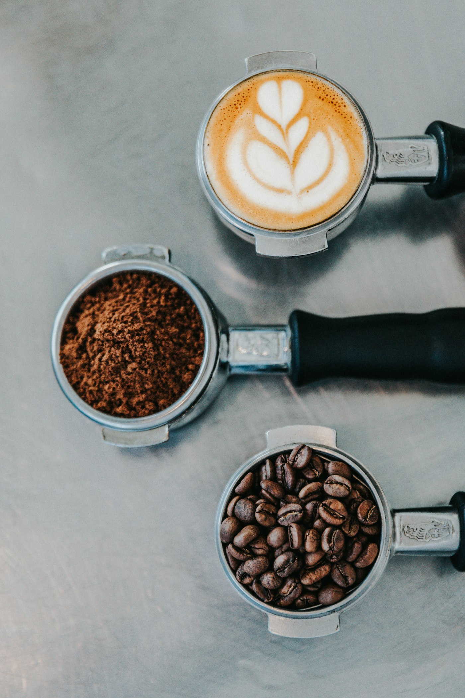

Brew better coffee at home
The three things that change everything: a 1:16 coffee-to-water ratio, fresh beans ground right before you brew, and water just off the boil (~93°C). Tastes weak? Grind finer. Bitter? Go coarser. That’s 90% of it.
Read the guide →
DRAFT · café to confirm method + add their house ratio